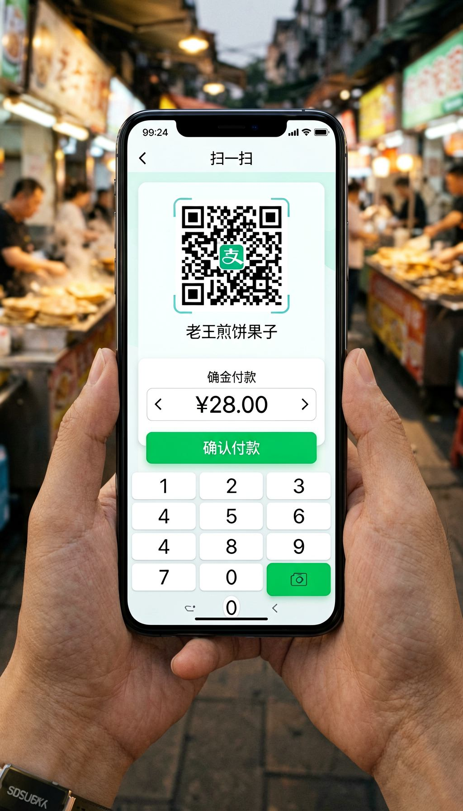
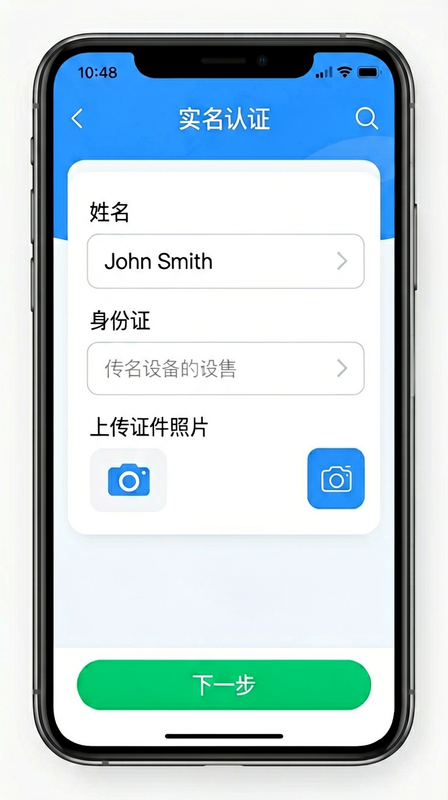
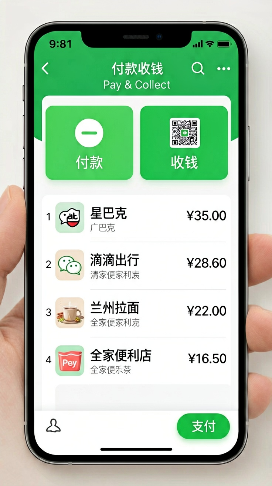
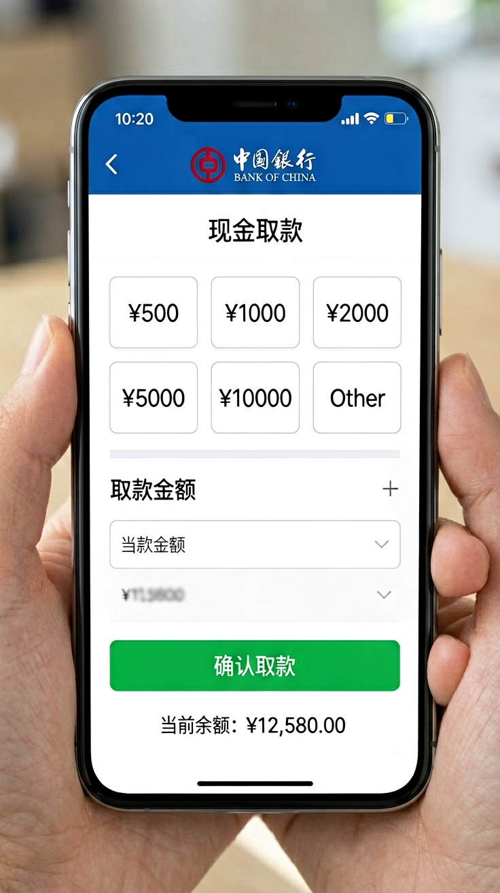

Last updated: June 2026.
You booked your flight and sorted out your visa. The next question: how do you actually pay for things in China? You are used to tapping a card or using Apple Pay. But when you open Xiaohongshu and scroll around, what you see is a country of QR codes — scanning to pay for meals, scanning to ride the subway, scanning at street stalls, even scanning to donate at temple donation boxes. Cash is disappearing in China, and card terminals are rare. The entire consumer society has migrated onto phones. Can you imagine landing and not being able to buy a bottle of water because you cannot pay?

This article solves two things: how to set up Alipay and WeChat Pay before your trip using only a foreign phone number and a foreign bank card, and how to complete every payment smoothly once you arrive in China. No fluff — just the steps, the limits, and the workarounds, all laid out clearly.
One number tells the story: mobile payment covers over 86% of retail transactions in China. From shopping malls to street-side pancake stalls, from hospital registration to utility bill payments, QR codes are everywhere. This is not one company pushing an agenda — it is the entire social infrastructure making a deliberate choice.
For your trip to China, mobile payment has four direct consequences. First, many merchants no longer keep change. Running into a "sorry, no change" situation is so common it is almost expected — order an 18-yuan bowl of noodles and hand over a 20-yuan note, and the owner will most likely shake their head. Second, for some services — booking museum tickets, buying high-speed train tickets, hailing a ride — online payment is often the only option. Third, without mobile payment, you will spend every transaction confirming whether cash is accepted, which drags the travel experience down to rock bottom. Fourth, mobile payment transactions go through your card issuer's clearing exchange rate, which is typically better than what you get exchanging physical cash.
The good news: Alipay and WeChat Pay significantly lowered the barrier for international users after 2023. A foreign phone number works for registration. A foreign Visa or Mastercard works for linking. You do not need a Chinese bank card or a Chinese phone number. This change happened around the Hangzhou Asian Games and directly improved payment convenience for international travelers. Below are the setup processes for both apps, one at a time. Important: the two apps do not share accounts — WeChat's identity verification does not carry over to Alipay, and vice versa. You will need to register, verify your identity, and link a card separately in each app.
Alipay is the payment tool with the widest coverage across China. For international users, the core setup can be completed entirely before departure.
Step one: download Alipay from your app store. If the interface shows up in Chinese, do not worry — after registering and logging in, switch to English through "Me → Settings → General → Multiple Languages." Register with your foreign phone number, select your country or region code, and enter the SMS verification code.
Step two: identity verification. This is mandatory — without verified identity, your payment limits will be too low for normal use. Alipay supports passport verification: go to "Me → Account Settings → Identity Verification," select passport as your ID type, and follow the prompts to photograph your passport information page and complete face recognition. The whole process typically takes about five minutes, and approval is quick.

Step three: link your foreign bank card. Go to "Me → Bank Cards" and add a Visa, Mastercard, or JCB card. Note that Alipay limits the number of foreign cards you can link — typically no more than three. One primary card is enough. During linking, there will be a small pre-authorization charge, usually under one US dollar, to verify the card. Once verified, you are good to go.
On fees: Alipay charges roughly a 3% fee on transactions under 200 yuan. Transactions of 200 yuan or more are fee-free. The fee on small daily purchases adds up, but most people find the convenience vastly outweighs a few yuan in fees. A money-saving trick that is easy to miss: for purchases over 200 yuan, prefer Alipay over WeChat Pay — Alipay waives the fee above 200 yuan, while WeChat Pay has no such clear threshold. Additionally, the TourCard prepaid feature uses a different fee structure, and large top-ups may end up cheaper than paying directly with a foreign card.

WeChat Pay covers just as many scenarios as Alipay, and in some cases — WeChat mini-program payments, certain smaller merchants — it is the only option. If you already use WeChat, enabling payments is nearly zero effort.
The international registration path for WeChat Pay is a bit more winding than Alipay's. Download WeChat and register with your foreign phone number — this is the same as setting up WeChat for normal use. The key point: WeChat combines social and payment functions in one app. You need to go to "Me → Services" (labeled as WeChat Pay in some regions), then follow the prompts to link a bank card. WeChat Pay's identity verification also supports passports, but approval time can be longer than Alipay's — in some cases one to three business days. It is strongly recommended to sort this out at least a week before departure.
Linking a foreign Visa or Mastercard follows essentially the same process as Alipay. One difference to note: WeChat Pay's currency settlement mechanism is slightly different — WeChat typically settles in RMB first, and your card issuer then converts at its own exchange rate. The actual rate depends on your card issuer, not WeChat.
On fees: WeChat Pay also charges roughly 3% per transaction on foreign cards. There are occasional fee-waiver promotions for small transactions, but the rules change from time to time — go by what is shown on the card-linking interface.
One notable difference: WeChat Pay will sometimes show a "supports mainland China bank cards only" message in certain scenarios, which is much rarer on Alipay. If your WeChat Pay gets rejected at a merchant, do not immediately assume the app is broken — switching to Alipay often solves it. Overall, Alipay currently has slightly better compatibility with foreign cards, but WeChat's coverage within the mini-program ecosystem is unmatched. The best strategy: install both. Use Alipay as your daily QR scanner, and WeChat Pay for mini-program scenarios.
Problem one: payment fails. The possible causes, in order of likelihood — network issues (both Alipay and WeChat require a live internet connection), insufficient card balance or a fraud block by your card issuer, or the merchant's QR code not supporting foreign cards. Three fixes: buy a China data SIM or eSIM before departure so you have internet the moment you land, call your card issuer before departure to confirm international online payments are enabled, and if scanning a merchant QR fails, try the reverse — have the merchant scan your payment code instead.
Problem three: refunds. Merchant refunds go back to your foreign card through the original payment path, but can take seven to fifteen business days due to cross-border settlement. For small amounts, just wait. For larger amounts, keep a screenshot of the refund confirmation and follow up with your card issuer after leaving China.
Problem four: some merchants only accept WeChat Pay. This is a real thing, especially with small vendors, taxis in certain cities, and some farmers' markets. Again: install both apps as mutual backup.
Problem five: identity verification fails. Alipay and WeChat's facial recognition systems can struggle with certain passport photos — poor lighting, worn document pages, or odd facial angles can all cause failures. If repeated attempts fail, try again during daylight hours with good lighting, make sure your passport page is flat and clear, and keep your face straight and uncovered. In extreme cases, Alipay offers a manual review channel where you submit your passport photo plus a selfie holding your passport — the entry is on the verification failure page under "Contact Customer Service."
Problem six: exchange rate fluctuations. When paying with a foreign card through Alipay or WeChat Pay, the exchange rate is determined by your card issuer, not by Alipay or WeChat. The rate difference between different card issuers can be as high as 1% to 1.5%. If your card issuer charges a foreign transaction fee, that fee stacks on top of the payment amount. Check your card issuer's international transaction policy before departure, and if possible, pick a travel credit card with no foreign transaction fees.

Even though mobile payment dominates, cash and bank cards still have a role. Chinese law explicitly states that merchants cannot refuse RMB cash — if you run into a "no change" situation, politely insisting on paying cash is legally grounded. It is smart to withdraw 500 to 1,000 yuan from a Bank of China ATM at a time and keep it on hand for the few cash-only street stalls, emergency situations, and the rare occasions where a tip is appropriate.
Foreign-issued Visa or Mastercard cards can be swiped at very limited places — mainly international chain hotels, upscale restaurants, and large duty-free shops. Do not expect to use a foreign credit card at a small shop or local restaurant. Ninety-nine percent of merchants will tell you it does not work. UnionPay cards fare slightly better, but it still depends on whether the merchant has a card terminal.
ATM withdrawals with foreign cards typically come with a 2% to 3% fee plus a fixed charge. Check the rates in your card issuer's app before withdrawing. Stick to ATMs at major banks — Bank of China, ICBC, China Construction Bank — as smaller banks or independent ATMs can have significantly worse rates and fees.
One last reminder: download Alipay and WeChat before departure. If WeChat is unavailable in your region, download it using a local network once you are in China. The very first thing to do after landing is make sure your phone has internet — buy a SIM card or activate an eSIM. Without internet, mobile payment is a brick.
To sum up: when traveling in China, Alipay and WeChat Pay are your payment infrastructure. Verify your identity with your passport and link your foreign bank card before departure, install both apps as mutual backup, and carry a small amount of cash for emergencies. The entire setup takes half an hour of your time and saves you from countless moments of "how do I pay" anxiety during your trip. When it comes to spending money in China, the biggest obstacle is not the language barrier or exchange rate losses — it is not having these two apps installed before you leave. For visa and entry policies, check out the visa guide section of this site; for getting around, see the transportation guide.
This article is based on information as of June 2026.
Sources
Payment platform policies and fee structures may change. Verify the latest terms within each app before your trip.